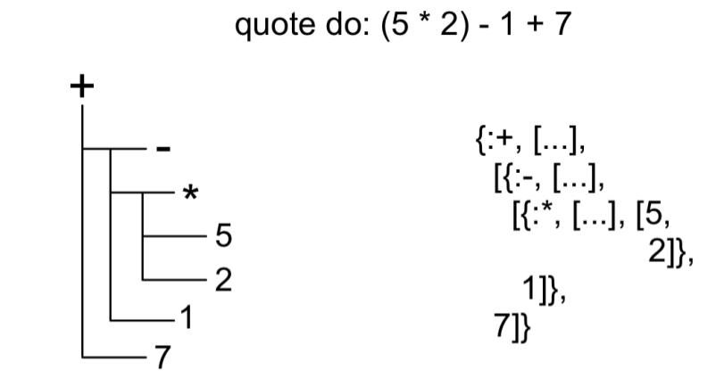
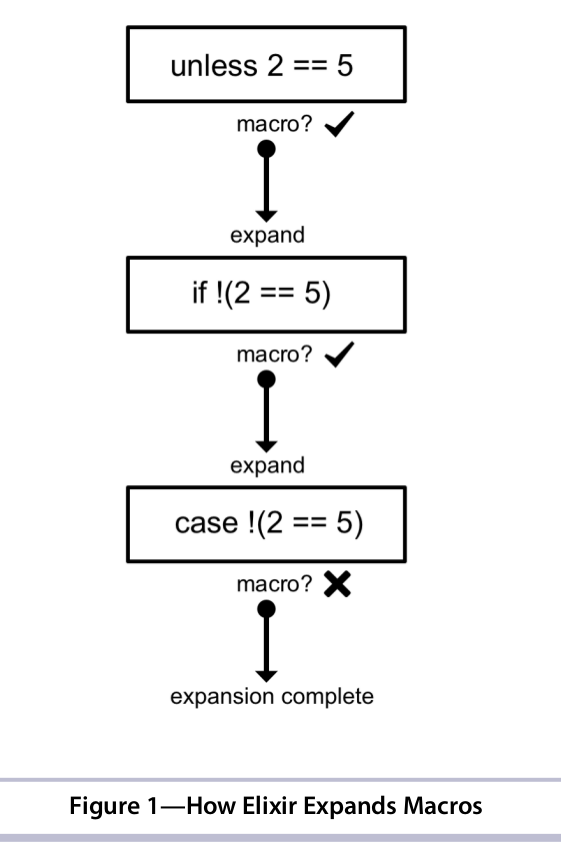

Автор: Давыденков Михаил
Зачем нужно и как реализовано
Метапрограммирование - тёмная сторона силы :) Большие возможности и много граблей при неправильном подходе. Обычно используется в библиотеках и для упрощения написания рутинного кода. Чтобы понимать код библиотек и писать собственные в метапрограммирование полезно разбираться
В эликсире реализовано через макросы. И сам язык - это маленькое ядро специальных форм и обвеска из макросов на разные случаи жизни.
Язык проектировался с учётом расширяемости и предоставляет для этого много хорошего
Философия (Language consumer |> Language creator)
Танцы вокруг AST
Абстрактное Синтаксическое Дерево (AST) - это то, во что компилируются/транслируются большинство языков и что в последствии трансформируется в байткод/машинный код. Обычно разработчик никогда не взаимодействует с AST напрямую.
Чтобы сделать язык таким расширяемым, Хосе Валим сделал очень интересную вещь. Он предоставил разработчикам интерфейсы для прямой трансормации и интроспекции AST.
Макросы и доступ к AST
Макрос - это код, который генерирует код. В эликсире макрос получает на входе AST и на выходе отдаёт AST. Могут разворачиваться до компиляции.
C помощью макроса quote мы можем получить репрезентацию любого куска кода в виде AST(и делать всякие хитрые трюки)
iex> quote do: 1 + 2
{:+, [context: Elixir, import: Kernel], [1, 2]}
iex> quote do: div(10, 2)
{:div, [context: Elixir, import: Kernel], [10, 2]}
iex> quote do: 1 + 2 + 3
{:+, [context: Elixir, import: Kernel],
[{:+, [context: Elixir, import: Kernel], [1, 2]}, 3]}
Пример макроса
iex> Math.say 5 + 2
5 plus 2 is 7
7
iex> Math.say 18 * 4
18 times 4 is 72
72
defmodule Math do
# {:+, [context: Elixir, import: Kernel], [5, 2]}
defmacro say({:+, _, [lhs, rhs]}) do
quote do
lhs = unquote(lhs)
rhs = unquote(rhs)
result = lhs + rhs
IO.puts "#{lhs} plus #{rhs} is #{result}"
result
end
end
# {:*, [context: Elixir, import: Kernel], [8, 3]}
defmacro say({:*, _, [lhs, rhs]}) do
quote do
lhs = unquote(lhs)
rhs = unquote(rhs)
result = lhs * rhs
IO.puts "#{lhs} times #{rhs} is #{result}"
result
end
end
end
Ещё пример. Добавление оператора в язык
import Kernel, except: [unless: 2]
import ControlFlow
unless 2 == 5, do: "block entered"
"block entered"
unless 5 == 5, do: "block entered"
nil
defmodule ControlFlow do
defmacro unless(expression, do: block) do
quote do
if !unquote(expression), do: unquote(block)
end
end
end
unquote
C помощью макроса unquote мы можем заинжектить значение в AST
number = 5
ast = quote do
number * 10
end
# {:*, [context: Elixir, import: Kernel], [{:number, [], Elixir}, 10]}
Code.eval_quoted ast
# ** (CompileError) nofile:1: undefined function number/0
number = 5
ast = quote do
unquote(number) * 10
end
# {:*, [context: Elixir, import: Kernel], [5, 10]}
Code.eval_quoted ast
{50, []}
Ещё пример. Добавление оператора в язык
defmodule ControlFlow do
defmacro unless(expression, do: block) do
quote do
if !unquote(expression), do: unquote(block)
end
end
end
Дополнительный шаг компиляции - благо в метапрограммировании
Наличие компилятора - безусловный плюс для серьёзных проектов. C его помощью можно вынести часть повторяющихся рутин на этап компиляции и не повторять каждый раз в рантайме.
Следующие примеры хорошо демонстрируют это утверждение
Разворачивание макросов
В языке есть средства для просмотра AST на каждом из этапов (см Macro.expand_once)
Тестовый фреймворк за 60 строк кода
Интерфейсы
JavaScript:
expect(value).toBe(true);
expect(value).toEqual(12);
expect(value).toBeGreaterThan(100);
Ruby:
assert value
assert_equal value, 12
assert_operator value, :<=, 100
Elixir:
assert value
assert value == 12
assert value <= 100
В JS и Ruby используются разные методы для выполнения assertion, т.к. нужно выводить различные сообщения об ошибках для разного типа операций.
В Elixir того же функционала можно добиться используя макрос (pattern matching по кускам AST)
Тестовый фреймворк за 60 строк кода
Как будем пользоваться:
defmodule MathTest do
use Assertion
test "First test description" do
assert 5 == 55
end
test "Second test description" do
assert 5 > 5
end
end
MathTest.run()
# ===============================================
# FAILURE: First test description
# ===============================================
# Expected: 5
# to be equal to: 55
#
# ===============================================
# FAILURE: Second test description
# ===============================================
# Expected: 5
# to be greater than: 5
Как будем писать (Ссылка на исходники для удобства чтения)
Тестовый фреймворк за 60 строк кода
Что примечательного:
I18n.t за 65 строк кода
Как будем пользоваться:
defmodule I18n do
use Translator
locale "en",
flash: [
hello: "Hello %{first} %{last}!",
bye: "Bye, %{name}!"
],
users: [
title: "Users"
]
locale "fr",
flash: [
hello: "Salut %{first} %{last}!",
bye: "Au revoir, %{name}!"
],
users: [
title: "Utilisateurs"
]
end
## I18n.t("en", "flash.hello", first: "Chris", last: "McCord")
## "Hello Chris Mccord!"
## I18n.t("fr", "flash.hello", first: "Chris", last: "McCord")
## "Salut Chris McCord!"
## I18n.t("en", "users.title")
## "Users"
Как будем писать (Ссылка на исходники для удобства чтения)
I18n.t за 65 строк кода
Что примечательного:
Генерация кода из внешних источников
Mime-type по расширению файла и наоборот (с фоллбэками и хелпером) - 15 строк
defmodule Mime do
@external_resource = mimes_path = Path.join([__DIR__, "mimes.txt"])
for line <- File.stream!(mimes_path, [], :line) do
[type, rest] = line |> String.split("\t") |> Enum.map(&String.strip(&1))
extensions = String.split(rest, ~r/,\s?/)
def exts_from_type(unquote(type)), do: unquote(extensions)
def type_from_ext(ext) when ext in unquote(extensions), do: unquote(type)
end
def exts_from_type(_type), do: []
def type_from_ext(_ext), do: nil
def valid_type?(type), do: exts_from_type(type) |> Enum.any?
end
## USAGE
## c "mime.exs"
## [Mime]
#
## Mime.exts_from_type("image/jpeg")
## [".jpeg", ".jpg"]
#
## Mime.type_from_ext(".jpg")
## "image/jpeg"
#
## Mime.valid_type?("text/html")
## true
#
## Mime.valid_type?("text/emoji")
## false
Генерация кода из внешних источников
Что примечательного:
Консольная интеграция с github API в 19 строк
Исходники
defmodule Hub do
HTTPotion.start
@username "DavydenkovM"
"https://api.github.com/users/#{@username}/repos"
|> HTTPotion.get(["User-Agent": "Elixir"])
|> Map.get(:body)
|> Poison.decode!
|> Enum.each fn repo ->
def unquote(String.to_atom(repo["name"]))() do
unquote(Macro.escape(repo))
end
end
def go(repo) do
url = apply(__MODULE__, repo, [])["html_url"]
IO.puts "Launching browser to #{url}..."
System.cmd("open", [url])
end
end
iex(1)> Hub.
DavydenkovM.github.io/0
activejob-retry/0 capybara/0
design-patterns-in-ruby/0 dotenv-deployment/0
dotenv/0 dotfiles/0
elixir-webdriver/0 elixir_katas/0
go/1 hello_phoenix/0
jekyller/0 learnyounode_workshopper/0
phoenix_commerce/0 postgres_snippets/0
presentations/0 rails_and_contracts/0
rails_contexts/0 react-webpack-rails-tutorial/0
sips_fetcher/0 sshkit/0
Создание DSL. О чём спросить себя?
Тестирование библиотек
Обычно применяется интеграционное тестирование. Это очень просто
ExUnit.start
Code.require_file("translator.exs", __DIR__)
defmodule TranslatorTest do
use ExUnit.Case
defmodule I18n do
use Translator
locale "en", [
foo: "bar",
flash: [
notice: [
alert: "Alert!",
hello: "hello %{first} %{last}!",
]
],
users: [
title: "Users",
profile: [
title: "Profiles",
]
]
]
locale "fr", [
flash: [
notice: [
hello: "salut %{first} %{last}!"
]
]
]
end
test "it recursively walks translations tree" do
assert I18n.t("en", "users.title") == "Users"
assert I18n.t("en", "users.profile.title") == "Profiles"
end
test "it handles translations at root level" do
assert I18n.t("en", "foo") == "bar"
end
end
Тестирование библиотек
Иногда нужно применить юнит тестирование, но это более хрупкие тесты
test "compile/1 generates catch-all t/3 functions" do
assert Translator.compile([]) |> Macro.to_string == String.strip ~S"""
(
def(t(locale, path, binding \\ []))
[]
def(t(_locale, _path, _bindings)) do
{:error, :no_translation}
end
)
"""
end
test "compile/1 generates t/3 functions from each locale" do
locales = [{"en", [foo: "bar", bar: "%{baz}"]}]
assert Translator.compile(locales) |> Macro.to_string == String.strip ~S"""
(
def(t(locale, path, binding \\ []))
[[def(t("en", "foo", bindings)) do
"" <> "bar"
end, def(t("en", "bar", bindings)) do
("" <> to_string(Dict.fetch!(bindings, :baz))) <> ""
end]]
def(t(_locale, _path, _bindings)) do
{:error, :no_translation}
end
)
"""
end
Когда стоит применять, а когда нет